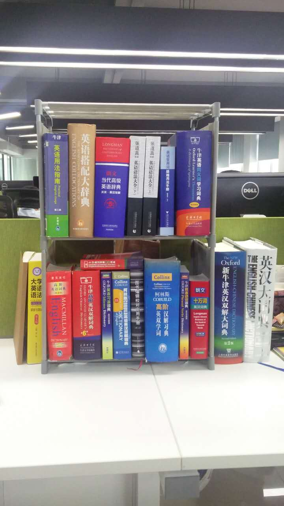

单词鸡汤丨Passion，你热爱做什么？
作者：王捷
单词鸡汤是扇贝推出的文章系列，每篇一个单词或者短语，还有一点点人生经验。
我们在招聘的时候，非常重视一个指标，就是应聘人是否足够热爱（have a passion for something）自己想要做的工作。
譬如说，我们一位内容制作同事，特别喜欢各种英语字典，可以孜孜不倦地研究和比较各种字典如何组织释义和例句，还有各种各种符号表示，他曾经写过《那么多英语词典，如何选择适合自己的？》
这是他的工作案头，碰他字典的时候，如果动作大一点，他都会嗷地叫一声。
但是也有些应聘的同学，虽然也一样会说自己自己热爱什么，但是真的问起来，好像不是那么一回事，譬如有说热爱产品的，装了很多APP，但是除了微信支付宝这些，没几个产品用过7天以上。有说喜欢编程的，但是除了在学校里老师布置的作业和毕业设计，没自己写过程序。
热爱的标准，可没那么低。
● 看别人在路边跳街舞，非常酷，你也想试试，这还不算热爱，只能算产生兴趣；
● 喜欢玩游戏，看电影，听音乐，这还不算热爱，只能算是爱好；
● 听说互联网或者金融行业工资高，就想投个简历试试，这也不算热爱，只能算是受诱惑。
那究竟什么是热爱呢？
衡量的标准就是，你愿意为之付出多大的代价。
你为自己热爱的事情付出时间，虽然不知道什么时候会有回报，但你觉得做这件事本身，就是一种回报。
你为自己热爱的事情努力学习，虽然不知道什么时候能学会能学好，但你知道，不去学习，就没有可能。
总结成一句话，为了做自己热爱的事情，你是否愿意做九十九件你讨厌的事情。